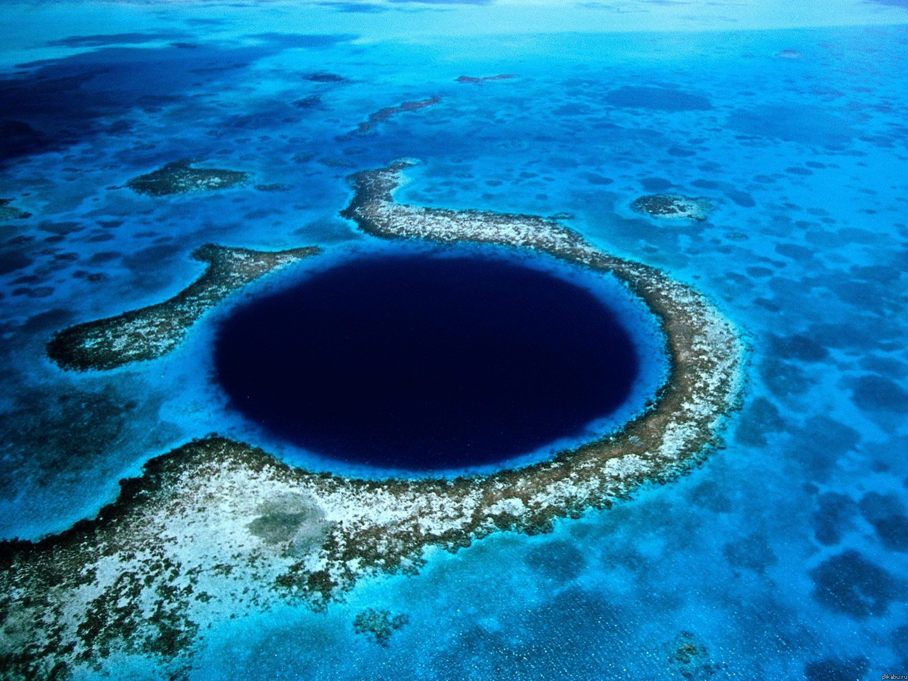
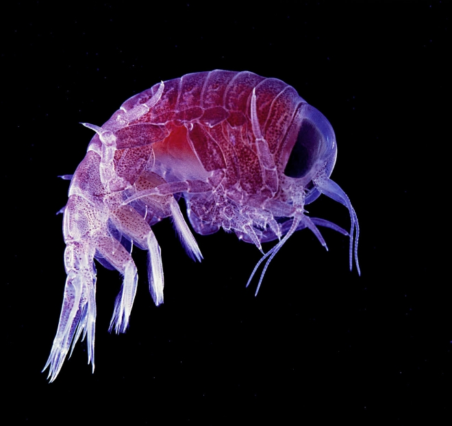

Марианская впадина
Мариа́нский жёлоб (или Мариа́нская впа́дина) — океанический глубоководный жёлоб на западе Тихого океана, самый глубокий из известных на Земле. Назван по находящимся рядом Марианским островам
Самая глубокая точка Марианской впадины — «Бездна Челленджера» (англ. Challenger Deep). Она находится в юго-западной части впадины, в 340 км на юго-запад от острова Гуам (координаты точки: 11°22′ с. ш. 142°35′ в. д.HGЯO). По замерам 2011 года, её глубина составляет 10 994 м ниже уровня моря.
Первые измерения (и открытие) Марианского жёлоба были проведены в 1875 году с британского трёхмачтового корвета «Челленджер» («Бросающий вызов»). Тогда, с помощью глубоководного лота, установили глубину 8367 метров (при повторном промере — 8184 м). В 1951 году английская экспедиция на научно-исследовательском судне «Челленджер» с помощью эхолота зафиксировала максимальную глубину 10 863 метра. По результатам измерений, проведённых в 1957 году во время 25-го рейса советского научно-исследовательского судна «Витязь» (руководитель Алексей Дмитриевич Добровольский), максимальная глубина жёлоба — 11 022 м (уточнённые данные, первоначально сообщалась глубина 11 034 м). Впоследствии именно значение 11022 метра указывалось для максимальной глубины Марианского жёлоба в советской учебной и энциклопедической литературе.
Исследования 1995 года показали, что Марианский желоб составляет около 10 920 м, а исследования 2009 года — что 10 971 м. Последние исследования 2011 года дают значение — 10 994 метров с точностью ±40 метров. Таким образом, глубочайшая точка впадины, именуемая «Бездной Челленджера» (англ. Challenger Deep), находится дальше от уровня моря, чем вершина горы Эверест — над ним.

Исследования проходили с августа по октябрь 2010 года, когда при помощи многолучевого эхолота была детально изучена площадь дна, равная 400 000 квадратных метров. В результате и были обнаружены, по меньшей мере, четыре океанических горных хребта высотой в 2,5 километра, пересекающих поверхность Марианского жёлоба в месте соприкосновения Тихоокеанской и Филиппинской литосферных плит.
Один из исследователей прокомментировал это так: «В этом месте геологическое строение океанической земной коры очень сложное… Эти хребты сформировались около 180 миллионов лет назад в процессе постоянного движения литосферных плит. Краевая часть Тихоокеанской плиты в течение миллионов лет постепенно „подползает“ под Филиппинскую, как более старая и „тяжёлая“… В ходе этого процесса образуется складчатость».
Один из исследователей прокомментировал это так: «В этом месте геологическое строение океанической земной коры очень сложное… Эти хребты сформировались около 180 миллионов лет назад в процессе постоянного движения литосферных плит. Краевая часть Тихоокеанской плиты в течение миллионов лет постепенно „подползает“ под Филиппинскую, как более старая и „тяжёлая“… В ходе этого процесса образуется складчатость».